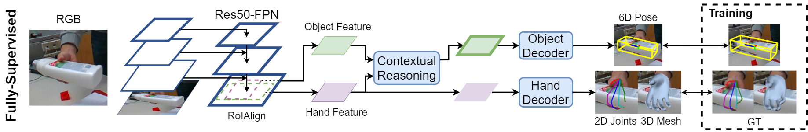

Semi-Supervised 3D Hand-Object Poses Estimation
with Interactions in Time
|
UC San Diego1 NVIDIA Research2
|
Estimating 3D hand and object pose from a single image is an extremely challenging problem:
hands and objects are often self-occluded during interactions,
and the 3D annotations are scarce as even human cannot directly label the ground-truths from a single image perfectly.
To tackle these challenges, we propose a unified framework for estimating the 3D hand and object poses with semi-supervised learning.
We build a joint learning framework where we perform explicit contextual reasoning between hand and object representations.
Going beyond limited 3D annotations in a single image, we leverage the spatial-temporal consistency in large-scale hand-object videos
as a constraint for generating pseudo labels in semi-supervised learning.
Our method not only improves hand pose estimation in challenging real-world dataset,
but also substantially improve the object pose which has less ground-truths per instance.
By training with large-scale diverse videos, our model also generalizes better across multiple out-of-domain datasets.
The proposed semi-supervised learning framework and results. We train an initial model on an annotated dataset,
and deploy it on a large-scale video dataset to collect pseudo-labels.
We leverage spatial-temporal consistency to obtain pseudo-labels and use them for self-training.
After the semi-supervised learning, both the performance of hand-object pose estimation
and hand pose generalization are improved.

The framework for hand-object 3D poses joint estimation.
The model consists of the shared encoder, the contextual reasoning module for modeling hand-object interaction
and two decoders for estimating hand-object poses.


Qualitative results of predicted hand-object pose estimation on the HO-3D dataset.
For each example, the first two columns show the recovered hand mesh and estimated 6-Dof object pose,
the third row shows the estimated hand-object in 3D, the color of the object indicates the 3D object mesh error.
Paper
 |
|
Shaowei Liu*, Hanwen Jiang*, Jiarui Xu, Sifei Liu, Xiaolong Wang
Semi-Supervised 3D Hand-Object Poses Estimation with Interactions in Time
*Equal contribution
|